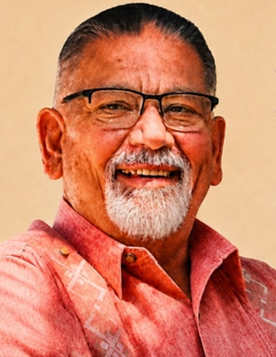
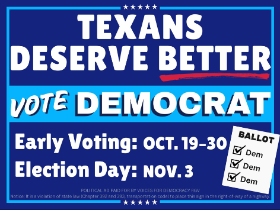
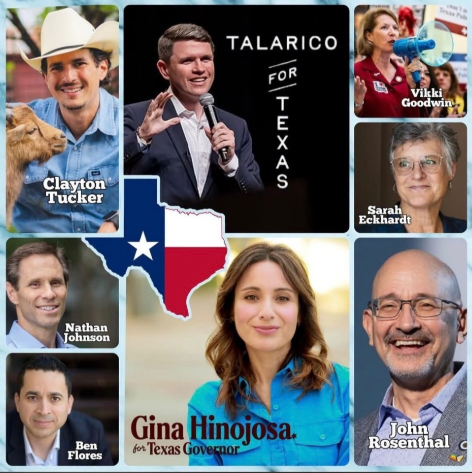

Welcome to our Mission neighborhood portal! Real democracy starts in our local community—when neighbors connect, listen, and organize together. I’m proud to represent and serve Precinct 93 in the Hidalgo County Democratic Party.
Join our private neighborhood WhatsApp group to receive verified voting information, polling updates, community announcements, and localized volunteer opportunities directly on your phone.
Scan with Your Camera
Open your smartphone camera or WhatsApp scanner to join instantly.
Meet the candidates running for Mayor of Mission and Mission City Council (Places 1, 2, and 3) in the November 2026 election. Stay informed, compare candidate statements, and make your voice heard at the Veterans Memorial Pavilion!

If your voter registration status is not “ACTIVE” or if you recently moved, text Karen Prewitt directly at (956) 957-8095 to help update and verify your registration before the deadline!
📍 300 S. Inspiration Road, Mission, Texas 78572
The Democratic slate of candidates for statewide offices has the depth of experience, integrity, and commitment to public service we need to make life better for working families, not billionaires. Vote Democratic all the way down the ballot!

Make sure your household displays our neighborhood message of hope, unity, and progress! Request an official Democratic yard sign delivered right to your lawn in Precinct 93.

Featuring Gina Hinojosa for Governor, James Talarico, Vikki Goodwin for Lt. Governor, Nathan Johnson for Attorney General, Clayton Tucker for Ag Commissioner, Sarah Eckhardt for Comptroller, Ben Flores for Land Commissioner, and John Rosenthal for Railroad Commission.
Verify that your voter registration is active and up to date on the official Texas Secretary of State portal before the deadline.
View your official sample ballot directly from the Hidalgo County Elections Department to review candidates and local propositions.
Explore party platforms, volunteer training, candidate directories, and countywide organizing initiatives.
Are you 65+, disabled, or out of the county during the election? Learn how to request and submit your mail-in ballot securely.
Show your neighborhood pride! Karen and our volunteer team will deliver an official “Texans Deserve Better • Vote Democrat” yard sign right to your front lawn in Mission Precinct 93.
We need Block Captains, phone bankers, and friendly drivers to give neighbors rides to the Veterans Memorial Pavilion. Let’s make a difference together!
Ensuring every eligible neighbor in Mission Precinct 93 is registered, informed, and has safe transportation to the Veterans Memorial Pavilion without obstruction or confusion.
Advocating for improved drainage, street lighting, clean community parks, and responsive municipal and county public services for Mission families.
Supporting Mission CISD public schools, defending teachers and student programs, and ensuring robust healthcare and community support for our seniors.